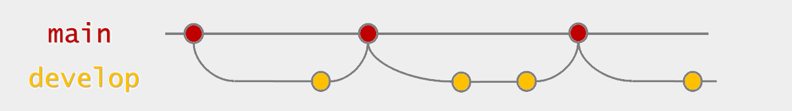
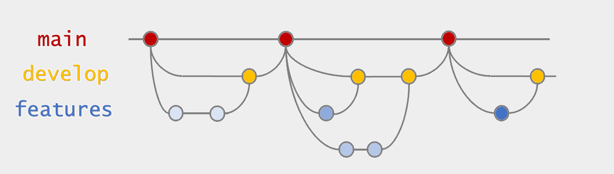

## Housekeeping - Check that you have access to the repository we will use today: https://github.com/luizaandrade/msfr-git - If you don't: - Share your GitHub handle with Luiza - Go to [https://github.com/luizaandrade/msfr-git](https://github.com/luizaandrade/msfr-git) to accept the invitation to join the organization
# GitHub pull requests May 8, 2023
Introduction
## Introduction <ul> <li>GitHub is a powerful tool to <b>track changes</b> and <b>collaborate</b> on <b>code</b></li> <li class = "fragment fade-in">In the last session, we learned how to use <b>git</b> to <b>track changes</b></li> <ul class = "fragment fade-in"> <li>Commit changes</li> <li>Pull from and push to the cloud</li> <li>Create and merge branches</li> </ul> <li class = "fragment fade-in">This week, we will focus on a <b>GitHub collaboration</b> feature called <em>pull request</em></li> </ul>
Git flow
## Git flow - Gitflow is a set of rules used by developers to manage branches in a project - It divides the code into different types of branches: - `main` - `develop` - *feature* branches - `hotfix` and `release` branches may also be used, but they are not as important to understand the workflow --- ## Git flow - `main` is the branch with the official or *production* version of the code - `develop` is the branch with the latest tested additions to the code  --- ## Git flow - *feature* branches are where the code is actively developed  Note: - the lines where feature branches are merged into develop or develop is merged into main represent pull requests. - there are the points in a project life cycle when code is reviewed.
Code review
## Why do code review? <ul> <li class="fragment fade-in">To share knowledge</li> <li class="fragment fade-in">To create familiarity with the code base inside a team</li> <li class="fragment fade-in">To improve code reproducibility and transferrability</li> <li class="fragment fade-in">For some peace of mind</li> <li class="fragment fade-in">To catch bugs</li> </ul> Note: - Learn by reading other people's code - You will need to create a reproducibility package at the end of a project or to hand it over. Reviewing code periodically is a way to make sure this is not an overwhelming task - RPs are often the only person looking at the code for a project, which can be a lot of responsibility - Mention some horror stories - It may seem like a very time-consuming task, but it will save you time in the long run, specially if you do it often --- ## How to do code review using GitHub? <ul class="small"> <li><a href="https://github.com/DevInnovationLab/dil-template-repo/blob/main/CONTRIBUTING.md#workflow">Suggested workflow for DIL projects</a></li> <ol> <li>Open a feature branch for small(ish) task</li> <li>Merge feature branches to develop every one or two weeks</li> <li>Merge develop to master at big project milestones, such as those used to create the results in reports, presentations, working papers, or paper submissions</li> </ol> <li><a href="https://devinnovationlab.github.io/guides/templates/code-review.html">What to look for when reviewing code</a></li> <li><a href="https://github.com/thoughtbot/guides/tree/main/code-review">A code of conduct for code review</a></li> </ul> Note: - Once the work on a feature branch is done: update the README, open a pull request to `develop`, and run the code for the entire project with the changes - Open pull requests to `main` to store major versions of the code, such as those used to create the results in reports, presentations, working papers, or paper submissions
Issues
## GitHub Issues Issues are a space to - Suggest changes to the code - Have discussions on how the code should be edited, creating documentation - Track the progress of a task --- ## Opening an issue 1. On the landing page of the repository, click on `Issues` on the main nevigation bar 1. Click on the green button called `New Issue` 1. Describe your suggestions 1. Assign someone to complete this task --- ## Responding to an issue 1. Create a new branch called `issue-##`, where `##` is the number of the issue you were assigned to 1. Open this branch in your local repo 1. Make the changes suggested in the issue 1. Commit your changes 1. Push your changes to the cloud
Pull requests (PRs)
## Opening a pull request (author) 1. On the browser, click on Pull requests > New pull request 1. Select your the branch `issue-##` (`develop`) as the `compare` branch and `develop` (`main`) and the base branch 1. Review your changes 1. Give a self-explanatory title to your pull request 1. Write a longer description of the changes made (if there are a lot of them) and why they are important (try "Solve issue #[number of the issue]") 1. Mark the person that created the issue as a reviewer to the pull request 1. Create the pull request --- ## Reviewing a pull request (reviewer) 1. Read the author's notes 1. Go to the *Files changed* tab and read the changes made 1. Click on the `+` sign next to a line to add comments to it (drag to comment multiple lines) 1. Click on the first icon to the left to make direct content suggetions 1. Explore the other formatting and linking options on the dialog box 1. Click on the *Viewed* box next to a file's title to hide changes 1. When you are done reviewing the changes, go to the top of the page and click on *Review changes* 1. Select approve changes or request additional changes 1. Leave a comment explaining your decision --- ## Responding to a review (author) 1. Open the PR from the *Pull request* tab in the repo's main menu 1. Respond to reviewer's comments using the same dialog box features 1. Direct code suggestions can be committed from the *Conversation tab* 1. If a comment had no action points, mark the conversation as resolved after reading it Note: show how to link to commits --- ## Reviewing author's responses (reviewer) 1. Open the PR from the *Pull request* tab in the repo's main menu 1. Respond to author's comments using the same dialog box features 1. If you are satisfied with the responses to a conversation, mark it as resolved 1. If all conversations are resolved, accept the changes and merge the PR Note: if there are open conversations, repeat the cycle